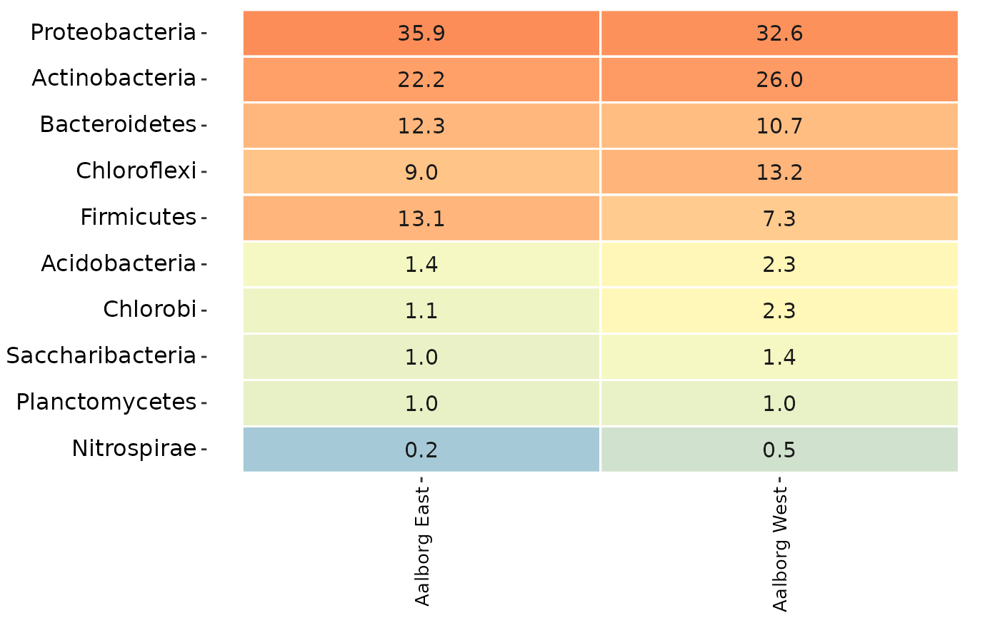

Generates a heatmap of amplicon data by using sample metadata to aggregate samples and taxonomy to aggregate OTUs.
amp_heatmap(
data,
group_by = NULL,
facet_by = NULL,
normalise = TRUE,
tax_aggregate = "Phylum",
tax_add = NULL,
tax_show = 10,
showRemainingTaxa = FALSE,
tax_class = NULL,
tax_empty = "best",
order_x_by = NULL,
order_y_by = NULL,
plot_values = TRUE,
plot_values_size = 4,
plot_legendbreaks = NULL,
plot_colorscale = "log10",
plot_na = TRUE,
measure = "mean",
min_abundance = 0.1,
max_abundance = NULL,
sort_by = NULL,
normalise_by = NULL,
scale_by = NULL,
color_vector = NULL,
round = 1,
textmap = FALSE,
plot_functions = FALSE,
function_data = NULL,
functions = c("MiDAS", "Filamentous", "AOB", "NOB", "PAO", "GAO"),
rel_widths = c(0.75, 0.25)
)(required) Data list as loaded with amp_load.
(recommended) Group the samples by a categorical variable in the metadata. If NULL then all samples are shown.
Facet the samples by a categorical variable in the metadata.
(logical) Transform the OTU read counts to be in percent per sample. (default: TRUE)
The taxonomic level to aggregate the OTUs. (default: "Phylum")
Additional taxonomic level(s) to display, e.g. "Phylum". (default: "none")
The number of taxa to show, or a vector of taxa names. (default: 10)
Add an additional row at the bottom displaying the sum of all remaining taxa that are not part of the top tax_show most abundant taxa. (default: FALSE)
Converts a specific phylum to class level instead, e.g. "p__Proteobacteria".
How to show OTUs without taxonomic information. One of the following:
"remove": Remove OTUs without taxonomic information.
"best": (default) Use the best classification possible.
"OTU": Display the OTU name.
Reorder the x axis by providing a character vector of the x axis values in the desired order, or "cluster" for hierarchical clustering by hclust.
Reorder the y axis by providing a character vector of the y axis values in the desired order, or "cluster" for hierarchical clustering by hclust.
(logical) Plot the values on the heatmap or not. (default: TRUE)
The size of the plotted values. (default: 4)
A vector of breaks for the abundance legend, fx c(1, 10, 20).
The type of scale used for the coloring of abundances, either "sqrt" or "log10". (default: "log10")
(logical) Whether to color missing values with the lowest color in the scale or not. (default: TRUE)
Calculate and display either "mean", "max" or "median" across the groups. (default: "mean")
All values below this value are given the same color. (default: 0.1)
All values above this value are given the same color.
Sorts the heatmap by the most abundant taxa in a specific sample or group of samples. Provide a sample name or a specific value of the group defined by the "group_by" argument, e.g. "Treatment A".
A variable or a specific sample in the metadata to normalise the counts by.
Scale the abundances by a variable in the metadata.
Vector of colors for the colorscale, e.g. c("white", "red").
Number of digits to show with the values. (default: 1)
(logical) Return a data frame to print as raw text instead of a ggplot2 object. (default: FALSE)
Return a 2-column grid plot instead, showing known functional information about the Genus-level OTUs next to the heatmap. By default, this functional information is retrieved directly from midasfieldguide.org. When using this feature, make sure that either tax_aggregate or tax_add is set to "Genus" and that Genus is the lowest level in either. (default: FALSE)
If plot_functions is set to TRUE: A data frame with functional information at Genus level. The first column must be the Genus names and any other column(s) can be any property or metabolic function of the individual Genera. If NULL then data will be retrieved directly from midasfieldguide.org. (default: NULL)
If plot_functions is set to TRUE: A vector with the functions to be displayed (column names in the functions_data data frame). If data is succesfully retrieved from midasfieldguide.org then available functions can be listed with colnames(.ampvis2_midasfg_function_data). (default: c("MiDAS","Filamentous", "AOB", "NOB", "PAO", "GAO"))
If plot_functions is set to TRUE: A vector with the relative widths of the heatmap and function grid when plot_functions = TRUE. (default: c(0.75, 0.25))
A ggplot2 object, or a list of ggplot2 objects if plot_functions = TRUE. A data frame if textmap = TRUE.
By default the raw read counts in the abundance matrix are normalised (transformed to percentages) by some plotting functions automatically (for example amp_heatmap, amp_timeseries, and more). This means that the relative abundances shown will be calculated based on the remaining taxa after the subset, not including the removed taxa, if any. To circumvent this, set normalise = TRUE when subsetting with the amp_subset_taxa and amp_subset_samples functions, and then set normalise = FALSE in the plotting function. This will transform the OTU counts to relative abundances BEFORE the subset, and setting normalise = FALSE will skip the transformation in the plotting function, see the example below.
data("MiDAS")
subsettedData <- amp_subset_samples(MiDAS,
Plant %in% c("Aalborg West", "Aalborg East"),
normalise = TRUE
)
amp_heatmap(subsettedData,
group_by = "Plant",
tax_aggregate = "Phylum",
tax_add = "Genus",
normalise = FALSE
)ggsaveWhen plot_functions = TRUE a list of ggplot objects is returned to allow adjusting themes etc. of the individual subplots. The list is of class hmfunplot and a matching print function for the S3 class then stitches together the individual plots using the patchwork package. Therefore to save the plot with ggsave simply pass on the plot object explicitly and wrap it in print(), see examples. This is not necessary if plot_functions = FALSE, as the returned object is then a regular ggplot object.
The complete raw data used to generate any ggplot can always be accessed with ggplot2_object$data when the plot is saved as a ggplot2 object. Additionally, a "textmap" version of the generated heatmap can also be generated by setting textmap = TRUE to only extract the raw data as shown on the particular heatmap, see examples.
# Load example data
data("AalborgWWTPs")
# Heatmap grouped by WWTP
amp_heatmap(AalborgWWTPs, group_by = "Plant")

# Heatmap of 20 most abundant Genera (by mean) grouped by WWTP, split by Year,
# values not plotted for visibility, phylum name added, colorscale adjusted manually,
# and show the sum of remaining taxa not part of the top 20 most abundant taxa
amp_heatmap(AalborgWWTPs,
group_by = "Plant",
facet_by = "Year",
plot_values = FALSE,
tax_show = 20,
showRemainingTaxa = TRUE,
tax_aggregate = "Genus",
tax_add = "Phylum",
color_vector = c("white", "red"),
plot_colorscale = "sqrt",
plot_legendbreaks = c(1, 5, 10)
)
# Heatmap with known functional traits about the Genera shown to the right
# By default this information is retrieved directly from midasfieldguide.org
# but you can provide your own with the function_data argument as shown with
# the textmap further down
suppressWarnings(
heatmapwfunctions <- amp_heatmap(AalborgWWTPs,
group_by = "Plant",
tax_aggregate = "Genus",
plot_functions = TRUE,
functions = c("PAO", "GAO", "AOB", "NOB")
)
)
class(heatmapwfunctions)
#> [1] "hmfunplot"
# To save the plot with ggsave() wrap the plot object in print()
# ggsave("plot.png", print(heatmapwfunctions))
# A raw text version of the heatmap can be printed or saved as a data frame with textmap = TRUE.
textmap <- amp_heatmap(AalborgWWTPs,
group_by = "Plant",
tax_aggregate = "Genus",
plot_functions = TRUE,
function_data = midasfunctions_20201201,
functions = c("PAO", "GAO", "AOB", "NOB"),
textmap = TRUE
)
textmap
#> Aalborg East Aalborg West PAO GAO AOB NOB
#> Tetrasphaera 5.478941 6.842382 POS NEG NEG NEG
#> Trichococcus 7.098638 3.028602 NT NT NT NT
#> uncultured 5.236024 4.304019 <NA> <NA> <NA> <NA>
#> Candidatus Microthrix 2.769444 6.503052 <NA> <NA> <NA> <NA>
#> Rhodoferax 3.361297 2.403885 NEG NT NT NT
#> Rhodobacter 1.847766 2.967430 NT NT NT NT
#> Candidatus Promineofilum 1.317348 3.028949 <NA> <NA> <NA> <NA>
#> Dechloromonas 1.220824 2.503898 <NA> <NA> <NA> <NA>
#> Candidatus Defluviifilum 1.824867 1.502981 <NA> <NA> <NA> <NA>
#> Propionicimonas 1.229790 1.726184 <NA> <NA> <NA> <NA>